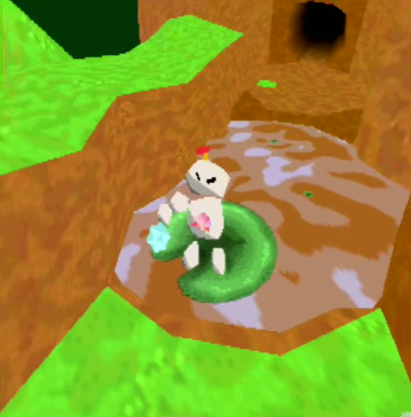
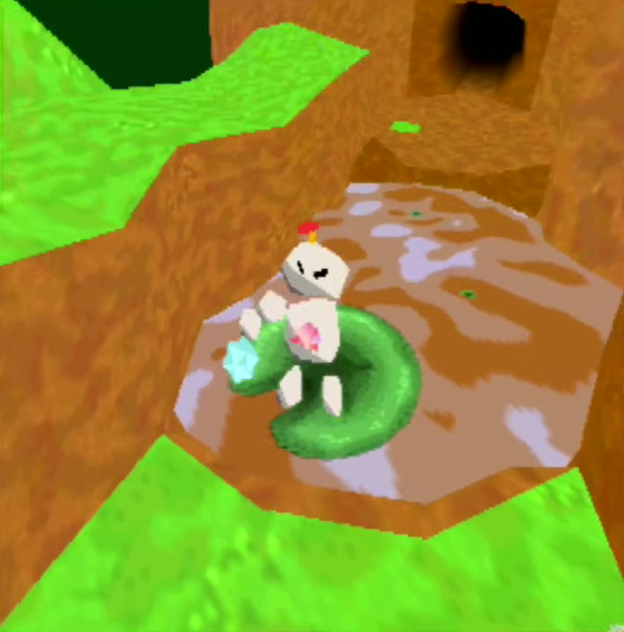

Interviews are CC BY-SA 4.0; Screenshots are likely fair use.

Tecto is InTheBeef and Wiseguy's submission for the N64Brew Game Jam. The game involves exploring a colourful 3D environment while changing the size of varous objects. There are a lot of clever technical elements to the game, plus it's just downright fun to explore in.
What got you into Nintendo 64 homebrew?
InTheBeef: IIRC I discovered it on a whim, I had already gotten involved in the Simpleflips (sm64) romhacking community and original games have always interested me.
Wiseguy: I got into N64 dev/hacking in general in early 2020 for a Super Mario 64 romhacking competition. During working on my entry for that, I really learned a lot about how N64 programming (especially graphics) works, which I found really interesting. A few months after the competition, InTheBeef, who I had met via that romhacking competition, asked me if I would be interesting in joining the N64Brew game jam on a team with her, which I was. After that, I took the time until the jam started to learn how to set up a toolchain to compile a game for N64.
How did you come up with the concept for your game? Was there anything about the jam's theme that stood out to you?
Wiseguy: The two of us spent a while brainstorming ideas for the game jam that fit the theme. Eventually we had the idea to make a game where you could interact with objects in the world to shrink/grow them in size, with the original example I pitched being picking up a rock to throw at an enemy, and then while in midair you'd turn it into a boulder to do a lot of damage. This was very loosely inspired by the creative combat you can do in Breath of the Wild, where you can make use of some physics based abilities in combat similarly. We didn't end up having enemies in the game, but the idea of interacting with objects to change their size stuck.
InTheBeef: We took the size theme quite literally & jumped on the resizable objects wagon pretty quickly. We had conceptualized puzzles from the start but gradually lent towards platforming and some simple mechanics we could implement quickly (due to running out of time).
What tools did you end up using to create your game?
InTheBeef: I almost exclusively used Blender (coupled with a custom modification of Fast64 for exporting), for texture generation or modelling, GitHub Desktop for file distribution & possibly textures.com for some last second relatively free assets.
Wiseguy: The main tool we used was Fast64, which is an incredibly capable blender plugin used for making graphics for Super Mario 64 romhacks. I heavily modified the tool to output data that fit the rendering system I designed for our engine, which ended up being a pretty big pain point as I had to balance my time between working on the rest of the engine and fixing many bugs that I had introduced in those modifications. Besides that, the only tool used for making the game was the toolchain, which was just a build of mips gcc+binutils for Windows, libultra from the SDK, and a python script that calculated the rom checksums. So basically, a Windows version of Crash's modern SDK (though since the jam I have gotten building working on linux via his SDK as well.)
Is there anything you particularily enjoy about your game, or is there something you worked on that you're particularily proud of?
Wiseguy: The part of the game that I'm most proud of is the engine, by far. It's got a lot of very advanced features in it (many of which we didn't even have the time to use sadly) in regards to memory and object management as well as collision.
The memory system is built on a custom fixed block allocator that can return contiguous blocks when you need a chunk of memory larger than a single block. That allocator is then used by the Entity-Component-System I implemented, which uses archetypes to increase performance by maximizing cache hits via data locality (see here, which is the primary resource I used to design the system for more details). Using that ECS I was able to make objects very flexible, since each object can have any arbitrary set of components attached to it which will dictate its functionality. This makes adding new functionality to the game's systems very easy.
The collision system is very noteworthy as well. Part of the modifications I made to Fast64 included an extra step in collision exporting that calculated a BVH (Bounding Volume Hierarchy). This is an acceleration structure that allows collision to be greatly sped up by using very efficient culling with Axis Aligned Bounding Boxes before doing an expensive triangle collision check. From there, collision detection is implemented using a series of raycasts for any objects that interact with collision meshes. Using some matrix math, I'm able to convert the rays into local space for any given collision mesh being checked against, so that I don't need to update those collision meshes each frame to translate their vertices into world space. This also ensures I don't have to make duplicates of every collision mesh for each object that uses them, as all objects that use a given mesh can just point to the same BVH tree.
InTheBeef: I'm proud of both the visuals that I worked on and engine that I didn't.
From the start Wiseguy had pitched a great idea for our shading, the pros/cons of which have become more clear with time and I had tried to lean into this style as much as I could throughout development. I still feel pretty good about the character design, vaguely inspired by golems/automations from Ghibli it's just something I designed on paper and threw together as I saw fit.
The engine had been a large focus from the start & I would assume a pretty good learning experience for Wiseguy who made all of it. High performance with flexibility was always the goal & while it might not have been perfect by the end all of the games systems fulfilled their role pretty decently. When people comment on our game it's always about what they see but personally I feel what's going on in the background is far more impressive & underrated.
How did you feel about writing a game in ECS on the Nintendo 64? That sort of thing wasn't really in vogue at the time of the system's popularity.
Wiseguy: As far as I know, the concept barely existed if at all at that point in game dev, so it was very interesting taking modern design principles and applying them to a console that is older than the principles themselves.
Writing an ECS on N64 was definitely difficult, especially since I constrained myself to using C. I considered using C++ for it, but I had heard that there were some issues that I didn't know the specifics of at the time, and I'm more experienced with just straight up C, so I ended up avoiding C++ for this case.
The hardest part was handling the memory management aspect of it, as it turns out none of the articles (that I could find at least) about ECS really cover the nitty gritty of how to actually store the component data, which is probably the most difficult part of the implementation of an ECS. Because each archetype has its own arraylist for its components, I ended up splitting each block of memory that a given archetype allocated into equal length (but not equal sized, since components can have different sizes) arrays for each component in the archetype.
As an example, if there is an archetype with components A and B, then all A and B instances for entities of that archetype are allocated together in blocks. If another archetype with A, B, and C components exists, then all instances of those A and B are stored in different blocks than the A and B for the first archetype. This means that every system that wants to iterate over all entities with a given base set of components have to iterate through all the archetypes that have at least those components, so I wrote some helper functions to abstract that part away.
Calculating how many elements to put in an array for a given block ended up giving me some trouble because of their varying lengths and may have been easier with C++ templates, but in the end I'm happy I went with C because it was a very interesting set of problems to solve. I'm happy that I went with an ECS, because I learned a lot about how they work and how to use them properly, which is very useful knowledge in general, not just for N64 development.
Think you'd look to reusing your ECS logic for another project on the Nintendo 64?
Wiseguy: I absolutely plan on reusing the ECS on another project when the time comes. There's a bug in relation to deleting objects (which I worked around by just resetting the entire system when leaving the level and going to credits), but other than that it works incredibly well. There's room to improve it in both usability and performance, for example tweaking the size of memory blocks to minimize wasted RAM while still maintaining good allocation performance, so it'll definitely get some upgrades next time I use it.
What was it like iterating on your work in Blender & seeing it ingame? Were there ever times where you'd tweak or update the environment after trying it out?
InTheBeef: The environment definitely saw many tweaks, repositioning l& to work better with the gameplay we rapidly cooked up & some thrown out parts of the model for concepts we didn't have the time to begin.
The little world in Tecto feels lush & interesting, & you made a lot of smart technical decisions for visual performance. The texture blender of the ground comes to mind. Would you have any advice on 3D modelling on the Nintendo 64?
InTheBeef: Worry about tri-count later, geometry optimization is quick & easy, actually making good looking geometry is the tough part. Be doubly certain of the available texture formats & effects you can pull off in the color combiner.
As long as you fully understand your software (& if it is capable) & what the N64 is capable of you shouldn't have much issue bringing your dreams closer to reality. I think there's probably a lot more room for graphical innovation than people think.
If you were to author more content or new assets for the game, is there anything you'd like to create?
InTheBeef: Originally I had thought up some Fire + Ice Levels & Final Dungeon concepts as well & a lot more size based puzzles. Adding those and polishing the Swamp is probably the main goal for me. A lot of texturing was rushed and it just doesn't sit right with me.
If someone wanted to get into homebrew today, would you have any advice or suggestions for them?
InTheBeef: Having a friend capable of coding is THE only reason I (an artist/3D modeler) could participate & have learned so much (& continue to do so thanks WG). Unless you're some kind of eldritch abomination capable of both graphics & coding, I think you're going to want a friend capable of covering for your weakness that wants to work with you.
To those wanting to do N64 graphics specifically: again, learn the texture formats and learn the color combiner. It's a pretty simple concept that you can play around with in Blender & the backbone of almost any graphical effect you're after.
Wiseguy: Since so much of N64 development is knowing how the graphics pipeline works, it might be worth looking into setting up some sort of sandbox environment to play around with things like the color combiner, texture loads, etc. to get a feel for them. Knowing how to render graphics is pretty critical (can't really have much of a game without any rendering of some kind), so I think it should be a pretty high priority detail to learn. Luckily, there are a lot of resources on how N64 graphics works not just in the homebrew community but in romhacking communities as well, since they all share the same graphics hardware at the end of the day. My only word of caution if learning via romhacking resources is to make sure you understand which parts are game-specific, such as rigging for skeletal animation, and which parts are not, such as displaylists and vertex arrays.
 

Website by Daniel Savage
Interviews are CC BY-SA 4.0; Screenshots are likely fair use.